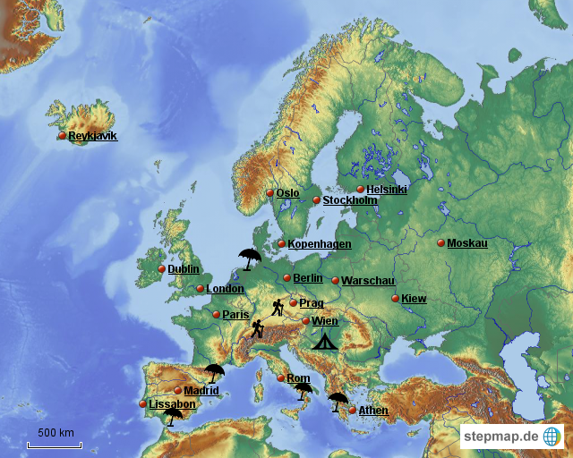
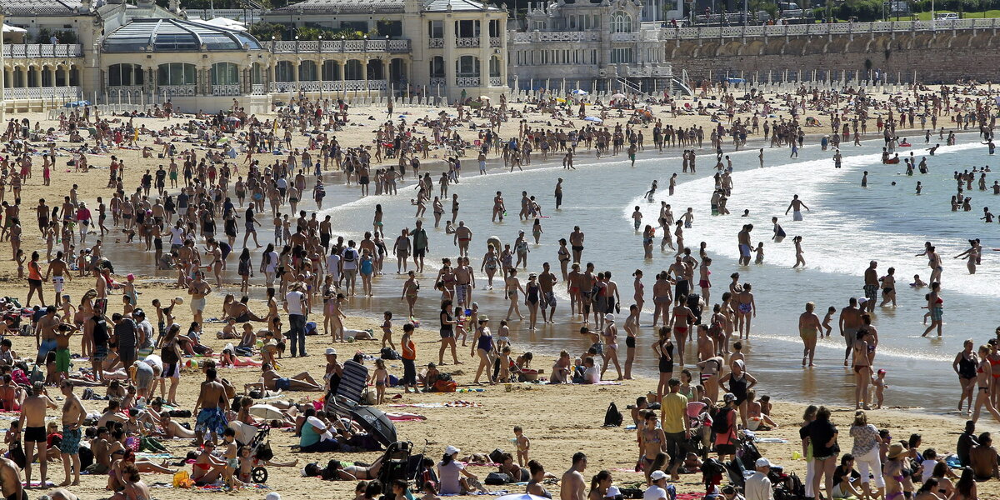
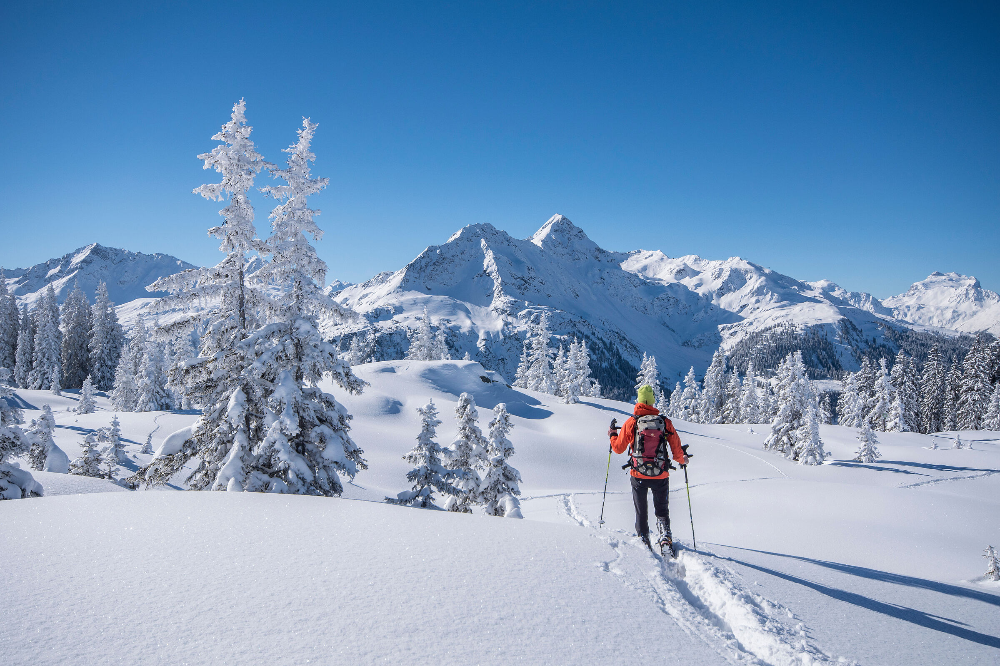

Überblick Europa
Haupttourismusregionen und ihre Kategorisierung
Europa als führende Tourismusregion
Europa ist der weltweit führende Tourismusmarkt mit über 700 Millionen internationalen Ankünften pro Jahr. Der Tourismus trägt etwa 12% zum Bruttoinlandsprodukt der EU bei und beschäftigt rund 27 Millionen Menschen direkt und indirekt.

Karte der wichtigsten Tourismusregionen in Europa
Kategorisierung der Tourismusregionen
1. Mittelmeerraum (Badeurlaub)
Der Mittelmeerraum ist Europas wichtigste Region für den Badeurlaub und profitiert vom 3-S-Tourismus (Sun, Sea, Sand). Die Region verzeichnet jährlich über 300 Millionen Übernachtungen.
- Spanien: Balearen, Kanaren, Costa del Sol, Costa Brava
- Italien: Riviera, Sizilien, Sardinien, Amalfiküste
- Griechenland: Kreta, Rhodos, Mykonos, Santorini
- Türkei: Türkische Riviera (Antalya, Bodrum)
- Kroatien: Dalmatinische Küste, Istrien
- Frankreich: Côte d'Azur, Korsika

Typische Mittelmeerküste mit Badeurlaub
2. Alpenraum (Berg- und Wintertourismus)
Die Alpen sind das wichtigste Gebirge für den europäischen Tourismus mit über 120 Millionen Übernachtungen pro Jahr. Sie bieten sowohl Winter- als auch Sommertourismus.
- Österreich: Tirol (50 Mio. Übernachtungen), Salzburg, Vorarlberg
- Schweiz: Wallis, Graubünden, Berner Oberland
- Frankreich: Französische Alpen (Chamonix, Val d'Isère)
- Italien: Südtirol, Dolomiten, Aostatal
- Deutschland: Bayerische Alpen, Allgäu

Alpentourismus: Skifahrer in verschneiter Berglandschaft
3. Städtetourismus
Europäische Städte ziehen jährlich über 400 Millionen Besucher an. Kulturelles Erbe, Architektur und urbane Attraktionen stehen im Mittelpunkt.
- Westeuropa: Paris (30 Mio.), London (20 Mio.), Rom (15 Mio.), Barcelona (12 Mio.)
- Mitteleuropa: Prag (8 Mio.), Wien (7 Mio.), Amsterdam (8 Mio.)
- Deutschland: Berlin (6 Mio.), München (4 Mio.), Hamburg (3 Mio.)
- Osteuropa: Budapest, Krakau, St. Petersburg
4. Küstentourismus (Nord- und Ostsee)
Die nördlichen Küsten Europas bieten alternative Urlaubserlebnisse mit Gesundheitstourismus, Naturerlebnissen und Familienurlaub.
- Deutschland: Nordsee (Sylt, Norderney), Ostsee (Rügen, Usedom)
- Niederlande: Nordseeküste (Zandvoort, Scheveningen)
- Dänemark: Jütland, Bornholm
- Schweden/Polen: Ostseeküste
5. Naturräume und Erlebnistourismus
Unberührte Naturlandschaften gewinnen als Tourismusdestinationen zunehmend an Bedeutung, besonders für nachhaltigen und Ökotourismus.
- Skandinavien: Norwegische Fjorde, Nordlicht, Lappland
- Island: Geysire, Gletscher, Vulkane
- Osteuropa: Karpaten, Balkan, Nationalparks
- Atlantikinseln: Azoren, Madeira, Kanaren
Atlasarbeit: Gunstfaktoren zuordnen
Aufgabe: Nutzt euren Atlas und ordnet den verschiedenen Tourismusregionen ihre spezifischen Gunstfaktoren zu.
Arbeitsschritte:
- Wählt drei verschiedene Tourismusregionen aus (z.B. Mittelmeer, Alpen, Skandinavien)
- Recherchiert für jede Region:
- Klimatische Bedingungen (Temperatur, Niederschlag, Sonnenstunden)
- Landschaftsformen (Küste, Gebirge, Ebenen)
- Kulturelle Besonderheiten (Sprache, Traditionen, Sehenswürdigkeiten)
- Erstellt eine Tabelle mit euren Ergebnissen
- Bewertet: Welche Faktoren sind für welche Art von Tourismus besonders wichtig?
Beispieltabelle:
| Region | Klima | Landschaft | Kulturelle Faktoren | Haupttourismusart |
|---|---|---|---|---|
| Mittelmeer (Spanien) | Mediterran, 300 Sonnentage | Sandstrände, warmes Meer | Spanische Kultur, Gastronomie | Badeurlaub |
| Alpen (Österreich) | Hochgebirgsklima, Schneesicherheit | Hochgebirge, Täler, Seen | Alpenkultur, Traditionen | Berg-/Wintertourismus |
| Eure Region | ... | ... | ... | ... |
Wusstet ihr schon?
- Die Balearen haben eine Tourismusintensität von über 80 Übernachtungen pro Einwohner
- Venedig empfängt täglich mehr Touristen als es Einwohner hat
- Die Alpen verfügen über 40.000 km Skipisten - das entspricht dem Erdumfang
- Island verzeichnete zwischen 2010 und 2018 eine Steigerung der Touristenzahlen um 400%
Regionale Unterschiede und Trends
Saisonalität
Die verschiedenen Tourismusregionen weisen unterschiedliche saisonale Muster auf:
- Mittelmeer: Hauptsaison Juni-September (80% der Übernachtungen)
- Alpen: Zwei Hauptsaisonen - Winter (Dezember-März) und Sommer (Juli-August)
- Städte: Ganzjährig, Spitzen im Frühjahr und Herbst
- Nordeuropa: Kurze Hauptsaison Juni-August
Aktuelle Entwicklungen
- Overtourism: Überlastung beliebter Destinationen (Venedig, Dubrovnik, Santorini)
- Neue Destinationen: Osteuropa und Balkan gewinnen an Bedeutung
- Nachhaltigkeit: Wachsende Nachfrage nach umweltfreundlichem Tourismus
- Digitalisierung: Online-Buchungen und digitale Services